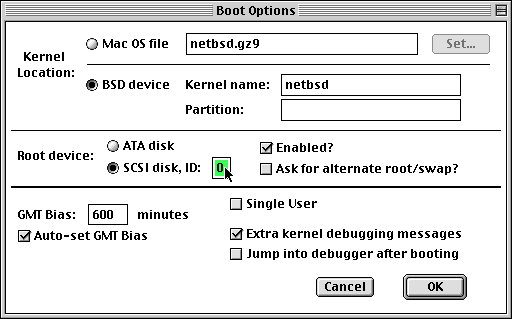
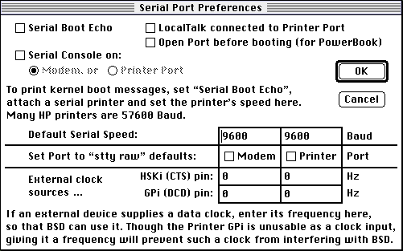
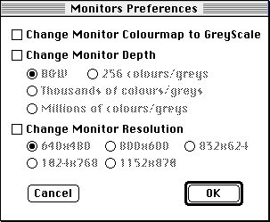
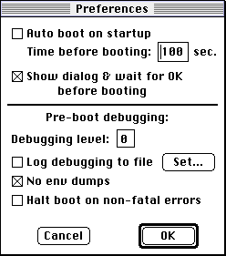
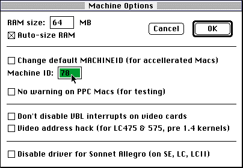

port-mac68k@netbsd.org.
Do this by sending mail to
majordomo@netbsd.org with no subject
and the single-line message:
subscribe port-mac68k J. Random User
The Macintosh models that are supported to some extent by NetBSD/Mac68k vary on what seems to be a daily basis sometimes. Check the web sites, and especially the user survey contained therein, for more information.
Assuming you have enough of Unix (and MacOS!) installed, here is how to boot it:
MID_M68K executable
1355440/4432+73908+176976+[184068+175954]
Bye-bye...
So I sez to him... The real way
that it should be done is to...
Then the system will act as if it is restarting, and when the restart would normally happen,
the screen will go blank and a short list of memory mappings will appear, followed by a
copyright notice and autoconfiguration information, which signals that you've booted.

Described below are the options that can be set from the 'Booting' dialog window. In most cases you should be able to boot after modifying only these options.
netbsd. This file is normally in the root directory of the root partition
of your BSD file system. However, it is also possible to load kernels from the MacOS
file system, such as when testing new systems, or on systems where SCSI is not yet
supported. This boot option lets you select the location of your kernel; if you select
Mac OS the Booter will look in its own folder for the kernel (or another folder selected
by pressing the 'Set' button). This option should, as stated above, normally be set to
BSD device
netbsd, and that is what you should enter
for the Kernel Name. However, if you are testing a recently-installed kernel, or simply
want to boot an alternate kernel, you can enter that name here too. Note well, however,
that much BSD software assumes that the kernel is named netbsd and is in
the root directory, so if you have a kernel that works well, you should probably name it
as that
If you have more than one such partition on the BSD device, you may want to force it to use one of them by entering the name of the partition in the Partition Name field. For a MacOS partitioned disk, this would be the name which your disk formatting software gave the partition when you created it e.g. 'UNIX Root&Usr slice 0', 'NetBSD Root & Usr' or 'A/UX Root'. For a BSD labelled disk (e.g. disklabelled), this would be the name of the disk slice e.g. 'sd0a'
If you do not enter a name, the Booter tries to guess the correct partition. The first Unix (i.e. type="Apple_UNIX_SVR2") partition with 'Root' in the name is its best guess, and if there isn't one of those, then the first Unix partition which doesn't have 'Swap' in it's name is its next best

The difference is important if your BSD/Mac68k machine is connected to the serial interface of an HP DeskWriter printer. They (and possibly other printers) report status by sending a character to the host computer. Without this boot option, BSD would think that a person was typing these characters and echo them back. But then the printer thinks it is supposed to print these characters. On the DeskWriter, these characters can come out as ugly white-on-black block letters (garbage). This printing will happen seemingly spontaneously, with no intervention from the user. Setting this boot option should cure the problem.
This option is probably not appropriate for a serial port hooked to a terminal, as the normal terminal defaults are the best in this case.
Each serial port has two input pins, so there are four possible clock rate values. When a clock rate is entered, two things happen. First, the associated pin is flagged as reserved for a clock, and second, the clock rate is considered when NetBSD requests a particular baud rate.
The first action happens as these pins (which have different names under BSD and Mac OS) are usually considered as modem signal pins by BSD. The kernel must respond accordingly whenever the modem thinks a data carrier has been detected, something which would normally happen less than once a second. Clock rates, on the other hand, are usually in the millions of cycles per second, so the clock reservation acts as a protection for the NetBSD kernel.
Note that one of the pins on the printer port (GPi/DCD) isn't actually usable by the baud rate hardware; it corresponds to the fully-featured clock input on the modem port. Thus it is included to protect the kernel from a device intended for the modem port yet connected to the printer port.
For those of you whose use your Macs for MacOS as well as BSD/Mac68k, these options allow you to keep you MacOS screen the way you like them, and then change the settings just before booting the BSD/Mac68k kernel:

Note that these options only affect the main monitor. They don't currently do anything with
multiple monitor setups.
Startup dialog window:
A few more miscellaneous options pertaining to the operation of the Booter itself are in the
Preferences dialog window:


The Booter program is only in memory up until the kernel loads and starts executing. One of the first things that the kernel does is clear the screen and start putting up console messages, the first of which is a NetBSD copyright message. If you got past the NetBSD copyright message, any error is probably not the fault of the Booter. If, however, the boot sequence fails while there are still MacOS windows on the screen, then it may indeed be a problem in the Booter.
The Booter has a number of debug messages that are only output when the 'Debugging Level' is greater than 0 (the default). The following lists the debug output for each level:
While the above list may be bewildering, if you seem to be having a problem with reading the kernel from a BSD filesystem, then 1 through 5 are the debug levels to try. SCSI buss problems can be investigated at debugging level 9. Illegal kernel formats may be revealed by debug level 6. et cetera
If you think you have found a bug in the Booter, or if you cannot work out all of the debug output, then you will need to document your system and the problem, and ask for help from the port-mac68k mailing list.
There are a list of Booter improvement suggestions in the file TO-DO.txt (in the src code package). Feel free to email any new suggestions to Nigel after glancing through that file. Also feel free to contact Nigel about implementing any of them yourself!
This long list of people have worked on the Booter: Allen Briggs, Steve Brown, Chris Caputo, Matthias Drochner, Michael Finch, Mikael Forselius, Joe Laffey, Brian Gaeke, Brad Grantham, Christian Gršssler, Markus Hitter, Dan Jacobowitz, Lawrence Kesteloot, Marc LaViolette, Eugenio Macia Vivo, Nigel Pearson, Scott Reynolds and Bill Studenmund.
This manual was written originally for NetBSD/Mac68k Booter version 1.9.4 by Brian Gaeke. Thanks to Bill Studenmund for descriptions of the new serial port options.
Copyright (C) 1996 Brian R. Gaeke
Copyright (C) 1997-2002 Nigel Pearson
All rights reserved.
Redistribution and use of this document, with or without modification, are permitted provided that the following conditions are met: